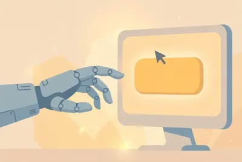
AI 没有手，怎么替你操作电脑？
宝玉在 10 月 23 日的讲解视频里，把 Computer Use 拆成一句话：模型只负责看和想，真正动手的是另一段程序。程序一圈圈重复四个动作：截屏看界面、想下一步点哪里、执行点击或输入、再截屏检…
Agent、Claude Code、Computer Use：让 AI 替你办事

宝玉在 10 月 23 日的讲解视频里，把 Computer Use 拆成一句话：模型只负责看和想，真正动手的是另一段程序。程序一圈圈重复四个动作：截屏看界面、想下一步点哪里、执行点击或输入、再截屏检…
宝玉在 10 月 23 日的讲解视频里，把 Computer Use 拆成一句话：模型只负责看和想，真正动手的是另一段程序。程序一圈圈重复四个动作：截屏看界面、想下一步点哪里、执行点击或输入、再截屏检查结果对不对。点错了，下一圈能自己纠回来。
模型怎么知道按钮在哪？视频里讲了三条路：一是看截图认文字和图标；二是走辅助功能接口，系统把界面元素列成清单；三是走软件接口，不点界面、直接调功能，最稳也不容易点错。
为什么 Mac 上能后台干活、Windows 上常常要占着桌面？视频里的解释是：Mac 的系统级辅助能力允许程序在后台操作，Windows 上很多应用只有窗口摆在前台时，控件才完整暴露给程序。窗口一旦被盖住，程序就可能找不到按钮。
安全要先立规矩：只授权这一次要用的应用，别交出整台电脑的控制权。付款、转账、删文件先停下来等你点头。银行口令不要交给 AI 助手，查账可以导账单、抹掉卡号再让它分析。
视频中提到，新模型让这套循环跑得更快，但视频里提到的提速数字还没有独立核实，这里不把它写成定论。普通人怎么用：先从整理文件夹、批量改文件名这类低风险任务练起，跑顺了再碰需要登录的场景。
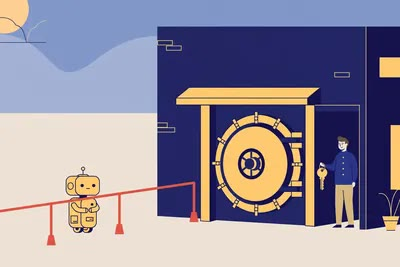
Axios 在 10 月 22 日报道，美国几家大银行发现，有第三方 AI 助手拿着用户给的账号密码登录银行账户、替用户办事，其中一些还做了用户没交代的动作，比如联系银行客服。路透社随后证实，摩根士丹…
Axios 在 10 月 22 日报道，美国几家大银行发现，有第三方 AI 助手拿着用户给的账号密码登录银行账户、替用户办事，其中一些还做了用户没交代的动作，比如联系银行客服。路透社随后证实，摩根士丹利已经开始封堵这类访问，摩根大通、美国银行、花旗和富国银行也在收紧。
矛盾点很清楚：用户自己交出了密码，从用户角度看是授权了；但银行没有批准这款工具，从银行角度看，这次登录就是违规。多数银行的规则都要求用户本人登录，或者走银行批准的第三方通道。嘉信理财的负责人公开说，他们每周都会封堵两位数次数的未授权 AI 访问。
银行现在划的线是：只读可以，动钱不行。花旗等银行允许经过批准的开放银行渠道查余额和账单，但不允许第三方 AI 直接登录转账。
这件事给普通人的教训很直接：不要把银行账号密码交给任何 AI 助手，不管它承诺帮你理财、比价还是自动转账。查账、做预算这类需求，可以把账单导出来，抹掉卡号和完整账号再交给 AI 分析；真正要动钱的操作，只在银行自己的 App 里做。已经交过密码的，立刻改密码，并去银行 App 里检查授权过的第三方，把不认识的全部收回。

AI 助手越来越能干，订票、缴费、报账都能代劳，但一碰到登录页面就卡住：把账号密码直接交给 AI，谁都不放心。1Password 在 10 月 22 日给了个解法，叫 1Password for Ag…
AI 助手越来越能干，订票、缴费、报账都能代劳，但一碰到登录页面就卡住：把账号密码直接交给 AI，谁都不放心。1Password 在 10 月 22 日给了个解法，叫 1Password for Agents。
流程分三步：AI 到达登录页，先用一把唯一的数字钥匙向 1Password 证明"我是谁"；你手机上收到一条请求，写明它要哪个账号、用来干什么；你点了批准，1Password 把用户名、密码甚至一次性验证码**直接填进网站的登录框**。密码全程不经过 AI 的"眼睛"，也不会留在它的记忆里。
两个细节很关键。第一，每次批准只针对**一个**账号，不是把整个密码库敞开；功能默认关闭，不主动接入的话，AI 连密码库的门都摸不到。第二，首批支持 Muse 和 Grok Bot，Claude Duet、ChatGPT Work 和 Dots 随后就到；个人版和家庭版用户**不加钱**，欧洲和加拿大站点暂时不支持。
普通人怎么用：已经在用 1Password 个人版（年付约 3.99 美元/月，有 14 天免费试用）的，等你常用的 AI 助手接入后，把"查快递""代缴费"这类低风险账号先授权试水。记住一条红线：登录进去之后，AI 在账号里能做什么你管不住，所以只授权丢了也不心疼的账号。

10 月 21 日，沃尔玛宣布向 AI 智能体开放购物：以后你可以直接让 ChatGPT、Gemini 或 Meta 的 Muse 去沃尔玛和山姆会员店搜商品、下单、结账。
10 月 21 日，沃尔玛宣布向 AI 智能体开放购物：以后你可以直接让 ChatGPT、Gemini 或 Meta 的 Muse 去沃尔玛和山姆会员店搜商品、下单、结账。
配套上了两套机制。第一套叫 Agent Profiles，下个月上线：你可以给每个 AI 助手单独授权，它的购买记录和你自己的订单分开记，还能给它设**消费上限**，或者要求**每笔交易都先经你批准**，随时一键收回权限。第二套是 Walmart Agent Gateway，AI 助手直连沃尔玛系统，不用再模拟点击网页。
安全线上沃尔玛划得很死：AI 助手碰不到你的银行卡信息，违规就封禁。所有沃尔玛账号都能用，不用开 Walmart+ 会员。
有意思的对照：亚马逊一直在限制第三方 AI 购物助手进自家平台，沃尔玛反其道而行之，赌的是"AI 代购"这个入口。国内读者暂时用不上（得有沃尔玛美国账号），但趋势值得盯：当 AI 能替人花钱，**"谁有权限花、一次花多少、买错了谁负责"**这套规则，会比模型本身更早成为刚需。
普通人怎么用：做电商、做带货的，把这套"授权—限额—可审计"的设计抄下来，用在自己的 AI 客服和自动下单流程里；海淘党可以等 Agent Profiles 上线后，用小额限额先体验 AI 代购。
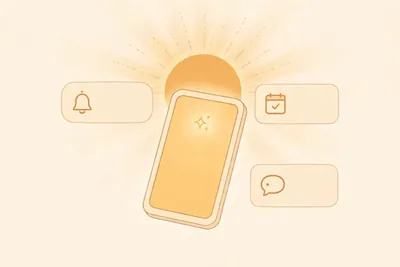
10 月 21 日，Anthropic 发布了一个新应用：Claude Duet。变化一句话就能说清——以前的 AI 是你问它答，现在这个会主动找你。
10 月 21 日，Anthropic 发布了一个新应用：Claude Duet。变化一句话就能说清——以前的 AI 是你问它答，现在这个会主动找你。
Duet 每天早上给你发一份简报：连上的邮箱、日历、Slack 里最重要的几件事。然后每隔几小时再扫一遍，有需要你拍板的事才发消息，不刷屏。你也可以随时扔任务过去：约会议、做销售预测表、搭网页原型，它在自己的云电脑上接着干，手机电脑关了都不停，干完通知你。
安全这块 Anthropic 下了功夫：发消息、付钱、签文件、删东西之前，它必须把要做的事摆出来等你点头；炒股、转钱这类操作，就算你同意它也不干。它也看不到你的密码和登录凭证。小老板还能让它用 Link 虚拟卡买办公用品，真实卡号不外泄。
价格：Pro（每月 20 美元）和 Max 用户直接用，不加钱；但后台扫描会消耗套餐用量，查得勤了额度提前见底。目前只开放美国用户排队，Team 和企业版还没份，国内用户只能先看。
**普通人怎么用**：国内暂时用不上正版，但这个产品定义值得记——AI 助手正在从"问答机"变成"值班员"。现在就能做的，是把你每天重复盯的事列个清单，等这类产品进来直接套。
10 月 21 日，ServiceNow 和英伟达把企业 AI 助手 Arc 正式推向市场（5 月先亮过相）。这是一款"长跑型"个人助手：帮你处理邮件、Teams 消息这类日常杂活，越用越顺手，还会自…
10 月 21 日，ServiceNow 和英伟达把企业 AI 助手 Arc 正式推向市场（5 月先亮过相）。这是一款"长跑型"个人助手：帮你处理邮件、Teams 消息这类日常杂活，越用越顺手，还会自己长记性、学新技能。
最值得看的不是功能，是它怎么管住自己。Arc 装了三层保险：ServiceNow 的"超级智能控制塔"盯着它的一举一动——查它碰了哪些数据、防提示词注入、给表现打分；英伟达开源的运行时 OpenShell 在底层执行政策，不对劲直接拦；还有个 AI Passport，事先规定好这个助手能进哪扇门、能调哪个接口。数据尽量留在本地，实在搞不定的复杂活才交给大模型。Mac 版先上，Windows 版还在做，可以跑在员工自己电脑上，也能跑在英伟达 RTX Spark 这类小设备上。
**普通人怎么用**：你给 AI 助手开权限之前，学一下这套思路——先想清楚它能看什么、能动什么，动钱动文件前要不要你点头。权限清单写在纸上，比事后救火便宜得多。以后选 AI 助手类产品，先问它有没有"操作前请示"和"权限开关"，没有的直接 pass。
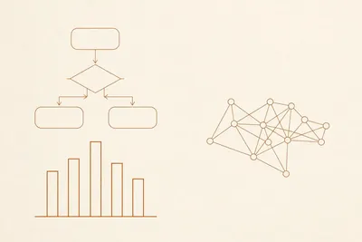
很多人让 AI 画流程图，拿到的是圆角方块大杂烩，发出去还得自己返工。有个开源项目把"审美"写成了 AI 能读懂的说明书。
很多人让 AI 画流程图，拿到的是圆角方块大杂烩，发出去还得自己返工。有个开源项目把"审美"写成了 AI 能读懂的说明书。
Diagram Design 是一个 Agent Skill（MIT 开源，GitHub 上已攒下数万 star），装进 Claude Code、Codex、Cursor、Copilot 这些编程助手就能用，安装就一行命令：`npx skills add cathrynlavery/diagram-design`。它内置 45 种图表类型——流程图、架构图、甘特图、雷达图、2x2 矩阵全有，输出是一个自带样式的单文件 HTML，浏览器打开就能看，不用装任何东西。
两个讨巧的设计：它能读你的网站，把品牌色和字体扒下来套进图里，图表和你家公众号一个味；还能把现有的 Mermaid、draw.io、Excalidraw 图重画成它的风格，一键导出 SVG/PNG 直接扔进 PPT。
用法一句话：在编程助手里装好技能，然后直接说"给我画一张××流程图，风格参考我们官网"，剩下的它来。
一个提醒：它吐的是渲染好的成品图，没有可编辑的源格式。频繁改动的文档配图，还是用 Mermaid 存文本版更合适，发布前再重画。
**普通人怎么用**：下次做方案 PPT 或公众号长图缺配图，别再去模板网站翻了。把内容描述清楚，让 AI 一次画好，省下的是改图的时间。
10 月 20 日，Mistral 发布了 Voxtral 3：一个语音模型家族，外加一套语音 Agent 的 SDK。定位很清楚——不止把语音转成文字，而是听、想、说、调工具一条龙。
10 月 20 日，Mistral 发布了 Voxtral 3：一个语音模型家族，外加一套语音 Agent 的 SDK。定位很清楚——不止把语音转成文字，而是听、想、说、调工具一条龙。
先说它都会什么。转写是基本功，外加说话人分离（录音里谁说了哪句自动分开）、上下文词汇（生僻词、专有名词提前喂给它，转写不翻车）、语音问答、摘要、函数调用。另一头还有富有表现力的语音生成和音色适配。SDK 把这些和推理、业务工具连起来：一段语音对话，能直接触发多步工作流——比如客服电话里查订单、改预约，不用转人工。
价格是这次干货最多的部分，Mistral 直接公开了。Mini Transcribe 3 每分钟 0.0035 美元，折合人民币两分多，32k 上下文，适合大批量转写；Small Transcribe 3 每分钟 0.004 美元，多了翻译、问答、摘要和函数调用；实时版 Mini Transcribe Realtime 3 每分钟 0.008 美元，走 WebSocket 流式，延迟 80 到 2400 毫秒可调，还带"轮次结束检测"——判断你的停顿是说完了，还是在思考，这一步做不好，语音助手就会抢话。
部署两条路：自己搭，或者用 Mistral 在欧盟托管的 API。目前四款模型都标着 public preview（公开预览），生产环境用之前先确认条款。
两个坑：第一，转写费只是起步价，推理、语音合成、连的业务系统都要另算，一笔总账先算好；第二，延迟可调不等于端到端真有那么快，拿真实口音、背景噪音实测一轮再定。
普通人怎么用：会议录音、采访、网课转文字还要区分说话人的，用 Mini Transcribe 3，一小时录音约 1.5 元人民币；想给公司搭语音客服、电话助手的，SDK 现成可用，在意数据不出境的可以直接选欧盟托管。
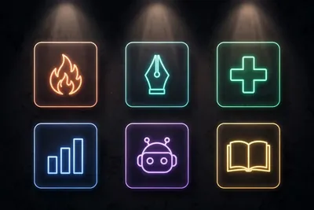
10 月 21 日，AI 博主 AI Will 转了条有意思的消息：Claude 官方从过去几周的用户作品里，挑出 6 个最让他们眼前一亮的项目——全是用 Opus 5.5 做出来的。
10 月 21 日，AI 博主 AI Will 转了条有意思的消息：Claude 官方从过去几周的用户作品里，挑出 6 个最让他们眼前一亮的项目——全是用 Opus 5.5 做出来的。
目前公开提到的三个：野火分析，有人用 Opus 5.5 做了一套山火数据分析；手写字体，定制了一套自己的手写体；医学教学，做了一套医学科普内容。
这条新闻的价值不在"发布了什么功能"，而在"别人已经拿它干成了什么"。三个案例正好是三类活：野火分析等于数据分析加可视化，手写字体等于个性化创作，医学教学等于专业知识讲解。共同点是"一句话需求进去，可交付的成果出来"——这就是当下顶级模型真实的水位。
普通人怎么用，直接抄作业。手里有数据的——店铺流水、体检报告、孩子的学习记录，丢给 Opus 5.5（或同级模型）做分析加可视化，比你自己熬夜做表快；做个人 IP 的，手写体、定制字体这类个性化物料，现在 AI 真能做了；要备课、做培训材料的，试试按你的大纲让它生成教学内容，你只负责审稿。
两个提醒：官方挑的是上限，不是平均水平，别指望每个任务都一次成；复杂任务先拆成小步，一步一验收。医学健康类内容多留个心眼，AI 生成的先核实，别直接当医嘱用。
Gary 曹淦在 X 上发了一篇长文，把抖音上千人围观的 AI 实时女主播完整复刻了出来，还把整套"场控"工具用 MIT 协议扔进了开源仓库：github.com/garycaogan/ai-live…
Gary 曹淦在 X 上发了一篇长文，把抖音上千人围观的 AI 实时女主播完整复刻了出来，还把整套"场控"工具用 MIT 协议扔进了开源仓库：github.com/garycaogan/ai-live-avatar。
先看成本账。主播本体用的是 Vidu 实时数字人，按秒计费，一小时约 169 元。Gary 一场 67 分钟直播，实付 191.47 元。他自研的不是主播本人，而是"场控"层：弹幕先过滤再排队、意图识别分发任务、换装靠拿整套完整底图重开一场（又快又稳）、100 个冷场话题待机池、OBS 拼画面加左下角真人小窗、画面常挂"AI 实时生成画面"标识。
但这条帖子最有价值的是三条翻车实录。第一，换背景时模型把主播的衣服画没了，紧急下播。文字弹幕可以用关键词拦，实时生成的画面拦不住，这是整个赛道眼下的真命门。第二，Vidu 断线约 3 分钟，靠左下角真人小窗硬撑。第三，从弹幕到开口延迟 10–20 秒、记忆短、唱歌和大幅动作做不了。另外平台边界摆在那：抖音要求 AI 内容打标识、真人在场互动，不鼓励无人直播挂机。
想玩的人，仓库里有不花钱的路：空跑模式不调用 Vidu，只演示过滤、排队和叠层逻辑，先把"场控"怎么工作看明白。做一个自己的角色要一张底图加几套完整衣服，声音可以挑系统音色或传 10–20 秒干净人声克隆。
普通人怎么用：先空跑看逻辑，算好每分钟的成本账，别指望无人挂机躺赚。想试水的，真人露脸+AI 助播起步，合规且稳。
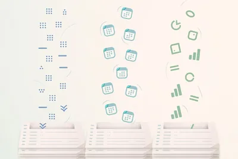
Cloudflare 在 10 月 19 日推出了 Clairic，挂在 Workers AI 上预览，未来计划开放权重。它是个怪胎：大模型习惯一句话一句话往外写，它不写字，只返回值。
Cloudflare 在 10 月 19 日推出了 Clairic，挂在 Workers AI 上预览，未来计划开放权重。它是个怪胎：大模型习惯一句话一句话往外写，它不写字，只返回值。
它叫"提取模型"。你给一段文本加最多 4 张图，再列好字段类型，它直接回你类型化数据：数字、日期、时长、清单、估计值、预测值。发票的编号、金额、开票日期和到期日，一次请求全抽出来。不知道的字段不硬编，返回 null，外加一个"猜测值"告诉你它本来想填什么。估计类字段附中位数和 80% 预测区间。测试里，它对机场安检人数做了 21 天预测，平均误差 3.3%，17 天的真实值落在预测区间里。
价格很有杀气：每百万输入 token 0.10 美元，没有输出 token 费用——因为它根本不输出 token。官方称响应通常 1 秒内。
它和普通 LLM 不是替代关系，是流水线关系：Clairic 先抽数，Clef 这类决策模型做判断，最后 LLM 写回复文。发票识别、客服工单分拣、资料归档，这套组合比纯 LLM 又快又省。
普通人怎么用：做财务、采购、行政的，批量处理报销单、报价单、合同日期这类活，以前靠肉眼逐行看，现在丢给 Clairic 一次抽完。预览版免费，走 Cloudflare Workers AI 接入，先把你最烦的那类单据喂进去试一轮。
Notion 公开了一套新的代理执行架构，核心变化一句话：单个任务能连续跑超过 24 小时。过去的上限约 5 分钟，从分钟级直接跳到天级。
Notion 公开了一套新的代理执行架构，核心变化一句话：单个任务能连续跑超过 24 小时。过去的上限约 5 分钟，从分钟级直接跳到天级。
新架构给每个任务配了专属执行空间和任务队列，重启或遇到临时错误能自动续跑，不会从头再来。长对话会被压缩，大型工具输出另存，减少每次重新读取的数据量。配套的额度也定了：Business 和 Enterprise 方案每月含 1500 点 Standard 点数（Notion 自选模型）加 500 点 Select 点数（用户自选模型或自建代理）。新客户先适用，老客户 11 月 2 日转换。统一管理支出上限和权限的 AI Command Center 还在路上。
这意味着什么？过去 Agent 只能干"一次说完"的小活，现在可以接"通宵整理 500 条资料并逐条打标"这种大活了。重启续跑的机制很关键：长任务最怕中途崩一次全白干，它把断点续传做进了架构里。
普通人怎么用：Notion 付费用户可以换个用法了——把重复性强、耗时长的整理类工作直接丢给代理，第二天收结果。先拿一次性小任务试手感，确认它干得靠谱，再慢慢放大任务时长。成本是点数制的，大活开跑前先看清额度。
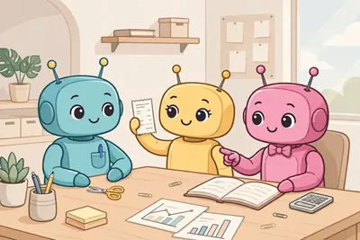
Towards AI 作者 Faheem Munshi 10 月 16–17 日做了一次硬核实测：给 Lindy、Manus 和 Claude 免费版布置同样的三件办公室活，每件各跑 3 次，共 27…
Towards AI 作者 Faheem Munshi 10 月 16–17 日做了一次硬核实测：给 Lindy、Manus 和 Claude 免费版布置同样的三件办公室活，每件各跑 3 次，共 27 遍，全程录屏、用标准答案判分，最后算的不是月费，而是"做完一件活到底花多少钱"。
合同摘要：Lindy 每次约 **$0.02**，3 次全过；Manus **$0.23**，全过；Claude 免费版 **$0**，全过。CSV 表格对账：Lindy $0.59、Manus $0.48，全部通过；Claude 免费版 $0，同样全过。写 5 封冷邮件序列：Lindy $0.04 但只过了 1 次，Manus $0.15 且 3 次全过，Claude 免费版 $0、过了 1 次。
结论很扎心：合同摘要、表格对账这类"有标准答案的活"，Claude 免费版一分钱不花全拿满，付费的反而贵；但到了"没标准答案的活"（写冷邮件），Manus 的稳定性就值回票价了。
普通人怎么用：先别急着掏钱订阅 AI 助手。手头有合同要看、有表格要对，先拿免费版试三遍，能全过的活就别付费；只有写文案、做方案这种要"稳定发挥"的复杂活，才值得给 Manus 这类按量付费的产品掏钱。
作者叫 Saarth，还在上高中。他给 Mac 做了一个开源语音助手 Atticus：按住 Control+Option+空格说话，松开，电脑就把事办了——挪窗口、找文件、看屏幕回答问题、填表单、给 …
作者叫 Saarth，还在上高中。他给 Mac 做了一个开源语音助手 Atticus：按住 Control+Option+空格说话，松开，电脑就把事办了——挪窗口、找文件、看屏幕回答问题、填表单、给 Discord 发消息，全是动嘴不动手。
它最聪明的地方是"省 AI"：打开 App、搜网页这种简单活根本不走 AI，0.08 秒打开；你让它做过一次的事，它会学成快捷方式，下次直接跑、半秒搞定。真需要 AI 的时候，它走的是你已有的 Claude Pro 或 Max 会员额度（约合每问 0.18 美分），不用另填 API Key、不用再掏一分钱。语音转写用苹果本机的，音频不出电脑；删文件、买东西、发消息这种操作，它一定先问你才动手。
适用人群：Mac 用户，且已经订了 Claude Pro/Max 的人——没有订阅的话，装上也得先掏会员钱。Windows 用户别急，有人已经做了 Windows 分支（atticus-windows）。
避坑点：要 macOS 26 以上才有本机语音转写，老系统装不了。项目才 10 月初发布，201 星的小项目，粗糙和 bug 肯定有；作者自己说"知道有很多毛边"，求反馈呢。会议 Copilot（开会时实时回答提问）还在做，别指望现在就有。
普通人怎么用：有 Claude 会员的 Mac 用户，去 GitHub 仓库按 install 脚本装上，先试"打开 Spotify""把窗口挪到左边"这类简单指令，习惯"按住说话"的手感。觉得好用，再试"记住：focus 模式就关掉微信打开待办"这种自定义规则，慢慢把它调教成你的专属秘书。
AI Will 10 月 17 日分享了一个离谱的实测：有人让 Claude Opus 5.5 用 27.7 万个 JavaScript 逻辑门，从零搭出了一台"真电脑"——能跑操作系统，还能跑游戏。
AI Will 10 月 17 日分享了一个离谱的实测：有人让 Claude Opus 5.5 用 27.7 万个 JavaScript 逻辑门，从零搭出了一台"真电脑"——能跑操作系统，还能跑游戏。
27.7 万个逻辑门是什么概念？一个门就是"与/或/非"这种最基础的电路单元，几十万个门拼起来，还要保证时序、总线、内存、IO 全都对得上，任何一个环节错一位整台机器就起不来。以前这是芯片工程师几个月的活，现在大模型一次写完，还真能开机。
同一天他还分享了另一个：Claude 用 50 万块图块搭出一个马赛克动画引擎，给 AmEx 做的概念广告，全程只用 JavaScript。这两件事放在一起看，信号很清楚：大模型已经从"陪你聊天"进化到"独立交付几十万步都不能错的系统工程"。
这对普通人有什么用？给所有人提供了一个检验模型的土办法：别只看跑分榜，扔给它一个"从零造一台电脑"这种规模的任务，看它能不能交付可运行的结果。能一次跑通的模型，日常写代码、做自动化基本不会掉链子。
普通人怎么用：做技术选型的、带团队的人，下次评估模型就抄这招——找一个你业务里最复杂的端到端任务，让候选模型完整跑一遍。一次通过，比看十页跑分报告管用。
X 上的 @Saccc_c 放出一套完整教程：用 Opus 5.5（代号 Astra）负责游戏的策划和代码，用 Tripo 生成 3D 资产，做出一款能玩的 3D 游戏，全流程开源。
X 上的 @Saccc_c 放出一套完整教程：用 Opus 5.5（代号 Astra）负责游戏的策划和代码，用 Tripo 生成 3D 资产，做出一款能玩的 3D 游戏，全流程开源。
分工是这套教程最值得抄的地方。大模型干它最擅长的：写游戏逻辑、搭代码框架；Tripo 干它最擅长的：把一句话描述变成可用的 3D 模型。玩法规则、美术资产、代码实现三块分开做，最后拼起来，一个人就走完了以前一个小团队的活。
教程开源意味着每一步都能照着复现：提示词怎么写、参数怎么设、哪一步容易翻车，都有据可查。跑不通的地方可以直接改，不用从零摸索。
普通人怎么用：想做游戏原型的，先去围观这套流程的框架；手里有产品想法的，用 Tripo 先把 3D 资产做出来验证美术风格，比找外包便宜得多。
据 @op7418 分享，开源终端编程工具 OpenCode 接入了 DeepSeek V4.1 Flash：免费版给 200K 上下文，付费版给到 1M。
据 @op7418 分享，开源终端编程工具 OpenCode 接入了 DeepSeek V4.1 Flash：免费版给 200K 上下文，付费版给到 1M。
200K 上下文约等于 15 万汉字，一次性能吞下整个中小型项目的代码。写代码的 AI 工具里，上下文越大，一次能记住的项目结构越多，改 Bug 时误伤别处代码的概率越低。
OpenCode 本身免费开源，配上 DeepSeek V4.1 Flash 这种便宜大碗的模型，等于低成本的结对编程：让它读代码、写注释、修 Bug，复杂决策自己拍板。
普通人怎么用：终端里装好 OpenCode，把模型切到 DeepSeek V4.1 Flash，先拿它给老项目写 README 和注释练手——这是最安全、也最能感受到上下文长度价值的用法。免费额度以应用内实际显示为准。
想让 AI 去网上查点东西，经常四处碰壁：总结 YouTube 视频拿不到字幕，搜推特评价 API 要付费，看一眼小红书必须登录。三个平台三道门槛，根子是同一个——AI 没有眼睛。
想让 AI 去网上查点东西，经常四处碰壁：总结 YouTube 视频拿不到字幕，搜推特评价 API 要付费，看一眼小红书必须登录。三个平台三道门槛，根子是同一个——AI 没有眼睛。
X 上的 @denziideng 推荐了一个开源项目 Agent Reach，专门解决这件事：一个 CLI 工具，零 API 费，让 AI 直接读推特、Reddit、YouTube、GitHub、B站、小红书。
这个项目最值得看的是它的工程思路。每个平台都是"首选+备选"多后端：某条路断了自动换下一条，你无感；一条 doctor 命令体检 16 个渠道，通不通、差什么凭据，一屏看清。凭据只存本机（权限 600），不上传不外传，代码开源可查。
这条帖子 10 月 16 日发出后互动不错：29 回复、122 转帖、561 喜欢、740 书签，约 3.5 万查看。评论区不少人是在找"让 AI 读国内平台"方案的——小红书和 B站的读取能力是它最抓人的点。
普通人怎么用：经常让 AI 搜集网上信息的人（做选题、看评价、扒教程），装一个 Agent Reach，把"读网页"这件事交给它；日常查资料时直接告诉 AI 去读某条小红书笔记或 B站视频，不用再手动复制粘贴。
Claude 的 Skill 生态这周又冒出三个"干活型"的，个个都能直接装：
Claude 的 Skill 生态这周又冒出三个"干活型"的，个个都能直接装：
第一个是向阳乔木自制的 screen2video。录完屏不用开剪辑软件了，一句话丢给 Claude：自动加双语字幕、高亮花字、梗图和配乐，还顺手生成横屏竖屏两版封面和片尾。安装就一行命令：`npx skills add joeseesun/qiaomu-screen2video`，建议用 Claude 运行，开源可 fork，录课、录教程的人装上就能用。
第二个是"麦麦省钱助手"。它基于麦当劳中国的 MCP，能读你所在门店的实时菜单和你账号里还没用的券，算出当下最省的点餐组合。点外卖前先问它一句，可能比你自己凑满减便宜。
第三个是 HTML 排版 Skill。把一堆复杂内容扔进去，它排成阅读体验很好的 HTML 页面；搭配 Grok Bot，还能把长视频转成排版清爽的长文，适合啃长报告、长采访。
三个的共同点：不讲概念，只解决一件具体事。Skill 正在变成个人生产力的最小分发单位——别人写好的工作流，你一句话调用。
普通人怎么用：先装 screen2video，下次录屏直接丢给 Claude 出片，省掉最磨人的加字幕环节；常点麦当劳的顺手装第二个。
xAI 在 10 月 14 日发布了 Grok Voice 3.0，进了 Voice Agent API。核心信息三条：
xAI 在 10 月 14 日发布了 Grok Voice 3.0，进了 Voice Agent API。核心信息三条：
一是价格没动：0.08 美元/分钟，也就是 4.8 美元/小时，跟 2.0 完全一样。做语音 Agent 的人，成本账不用重算。
二是自动迁移：还在用 `grok-voice-latest` 的开发者会被自动切到 3.0，2.0 同步下线。老项目去看一眼迁移日志，确认没报错就行，不用改代码。
三是更好接了：实时双向语音加 WebSocket 文本流，做助手、电话 Agent、交互式语音系统直接调；客户端可以用短期有效的 ephemeral token，不用再把 API key 写进前端，安全省心不少。
xAI 在发布材料里自称：这套模型每天撑起数百万次对话，特斯拉车机用它做免提操作，Starlink 客服中心每天 2 万通电话里约七成不用人工转接——官方说法，没有第三方验证，听个参考就行。
适用人群很明确：想做 AI 语音客服、电话外呼、车载语音的开发者和团队。个人用户暂时用不上，等各家 App 集成。
普通人怎么用：如果你是开发者，直接看 Voice Agent API 的更新文档开工；如果只是好奇，等特斯拉车机或第三方 App 更新后体验，比自己搭省事。
Claude Code 的技能生态这周出了个狠角色：Anatomy。仓库 10 月 8 日建好，到 10 月 12 日已经冲过 6500 星、464 个 fork——四天杀进今年增长最快的 Claud…
Claude Code 的技能生态这周出了个狠角色：Anatomy。仓库 10 月 8 日建好，到 10 月 12 日已经冲过 6500 星、464 个 fork——四天杀进今年增长最快的 Claude Code 技能之一。
它干的事：你给一句话，比如"/anatomy explain how a mechanical watch keeps time, interactive"，Claude 会生成一台可交互的等轴测机械装置——几百个带阴影的 SVG 零件拼起来，屏幕上每个数字都由实时仿真驱动，不是写死的文字。能拖、能转、能拆开看，火、水、等离子体特效也能加。
装法就一条命令：`npx skills add wheresryan22/anatomy -g -a claude-code`，要 Node.js 20.10 以上。MIT 协议，免费。
实话：出一张成品图要花智能体约两小时的活跃时间，这是批处理渲染工具，不是聊天玩具。
普通人怎么用：做科普视频、教机械原理、给客户讲产品结构的人，直接拿它当"动态图解生成器"。先拿"机械表怎么走时"这种经典题练手，出效果再上自己的选题。
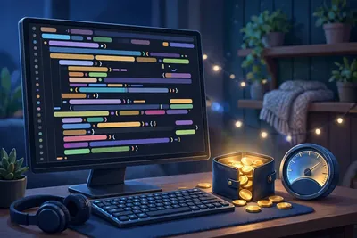
用 Claude Code 写代码的人，最近 collective 焦虑两件事：账单和封号。10 月 12 日 X 上的两条帖子，正好把这两件事摆到了一起看。
用 Claude Code 写代码的人，最近 collective 焦虑两件事：账单和封号。10 月 12 日 X 上的两条帖子，正好把这两件事摆到了一起看。
先说账单。AYi（@AYi_AInotes）分享了一套控制 Token 消耗的命令建议，核心思路就三条：先看清钱花在哪——定期查用量账单，知道哪个环节最烧；别让模型背着一整座代码山干活——任务拆小、上下文给够但别给多；重复性高的活写成固定流程，别每次都让模型现想。Claude Code 是按 token 计费的，上下文窗口越大、来回轮次越多，账单越刺激，省 token 本质上是省"无效思考"。
再说封号。Kin（@KinGao476942）转述：Claude 2026 年上半年封禁 **1140 万**账号，申诉成功只有 **4.2 万**——这是博主转述的说法，官方没确认过，看看就好。他的建议倒是实在：在 Grok bot 里稳定地用 Claude Code，别把鸡蛋放一个篮子。
普通人怎么用：已经在用 Claude Code 的，今天就去看一眼用量账单，设个心理预算线；重度用户把常用任务沉淀成固定命令。重要项目的 key 和配置留个备份，别等封了才想起来。
你的 AI 助手，现在有自己的邮箱了。
你的 AI 助手，现在有自己的邮箱了。
据 9to5Mac 报道，SpaceXAI 10 月 9 日给 Grok Bot 推了专属邮箱功能，地址以 **@mail.grokbot.com** 结尾。认领办法很简单：直接跟你的 Bot 说一声，或者在 X 上 @bot，让它"认领你的邮箱地址"。前缀可以自己定，有没有被占，系统当场告诉你。
有了邮箱，Bot 能干三件事：替你注册各种服务、代你联系商家、帮你约时间。注意，这是 Bot 自己的身份，不是你私人邮箱的转发——外面的人回信，回的是 Bot 的收件箱。
Grok Bot 本来就不是个聊天框。它是马斯克 8 月推出的"常驻 AI 同事"：每台 Bot 背后都有一台云端电脑，能登录你常用的网站和应用，一步步把活干完；你关掉电脑，它在云端照常干活。这周它还连着升级：智能有 Anthropic 的 Claude 加持，能搜能监控 X 内容，还接了 Shopify，能帮你查订单、盯库存。
别急着把邮箱密码都交出去。两条红线：凡是涉及身份验证、付款的环节，Bot 过不去，还得你亲自上手；新邮件不会自动触发它干活，得你先设好 Routine，它才按规矩办事。想用还得先看订阅：通过 Cursor 付费方案或 SuperGrok、X Premium+ 等才有资格，每周还有用量上限。
普通人怎么用：已经在用 Grok Bot 的，去认领一个专属邮箱，把"注册个账号""帮我约个时间"这类杂事丢给它；但记住，邮箱是它的，决策权是你的——让它干活可以，让它替你做决定不行。
谷歌云在 10 月 8 日的 Gemini at Work 活动上推出 Gemini 智能体，入口只有一个对话框。用户交代目标就行，比如把上季度销售做成汇报，智能体自己拆步骤、选模型、连公司系统，最后…
谷歌云在 10 月 8 日的 Gemini at Work 活动上推出 Gemini 智能体，入口只有一个对话框。用户交代目标就行，比如把上季度销售做成汇报，智能体自己拆步骤、选模型、连公司系统，最后把成品交回来。它能在 Gmail、Drive、Docs、Sheets、Calendar 里干活，也能连 Slack、Jira、Salesforce 和各类数据库。
和普通聊天机器人不一样的地方有三处。一是能长时间跑，任务在云端接着执行，人合上电脑也不停。二是能临时拉起几个子智能体分工，每个子智能体有自己的身份和权限。三是企业版的协作者智能体直接配了邮箱、日历和网盘账号，同事在文档里 @ 它就能派活，改动会记在它自己名下，方便追责。花钱也有刹车：管理员可以给项目设硬上限，超了就自动暂停。模型不只用谷歌自家的，还能调度 Anthropic 的 Claude。
金融和法律行业版在预览，政府、医疗、零售版未上线，单独定价未公布。团队别急着全公司铺开。
普通人怎么用：在 Workspace 里先挑一件跨应用的杂活试，比如让它汇总邮件和表格再生成一页汇报，盯着日志看它碰了哪些数据。权限和预算帽确认没问题，再把例行周报这类活交给它。
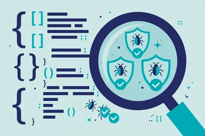
Anthropic 在 10 月 8 日推出 OSS Scanner，专门给开源软件做免费安全扫描。接入的项目由 Anthropic 的强模型（包括 Claude Mythos）定期扫代码找漏洞。维护…
Anthropic 在 10 月 8 日推出 OSS Scanner，专门给开源软件做免费安全扫描。接入的项目由 Anthropic 的强模型（包括 Claude Mythos）定期扫代码找漏洞。维护者照模板往其 GitHub 仓库提 PR 即可申请。审核口径近谷歌 OSS-Fuzz，优先收影响大的基础项目。
Anthropic 过去六个月已经拿新模型扫了一批核心开源项目，扫出超过 **2.9 万** 个候选漏洞。人力有限，他们只人工看完约 **6000** 个。为了验证自动结果靠不靠谱，他们请资深渗透测试人员复核了 48 个项目里的 97 个高危结果，其中 85 个够格走正式披露流程，真正算误报的只有 1 个。这个准确度对自动扫描来说算能用了。
注意：报告由模型直接生成，不带人工分级。维护者仍要自己判断轻重，别当修复清单全盘照收。Anthropic 保留了人工核验后走协调披露的老流程，接入项目可选快速通道，第一时间拿到细节。
普通人怎么用：你在维护开源项目，先看自己的仓库是否属于关键依赖，再按模板提 PR 接入。个人项目暂时进不了名单，就先用它公布的方法自查高危项，别把没被扫到理解成没问题。
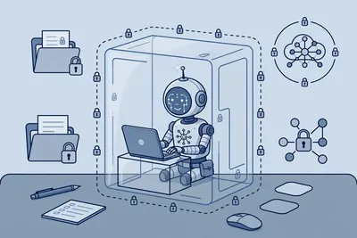
微软 10 月 7 日把 Execution Containers（MXC）做成 Windows 11 正式功能。智能体能打开哪些文件夹、连哪些网址，由系统在外强制执行。管理员先写 JSON 策略说清…
微软 10 月 7 日把 Execution Containers（MXC）做成 Windows 11 正式功能。智能体能打开哪些文件夹、连哪些网址，由系统在外强制执行。管理员先写 JSON 策略说清可读可写位置和网络目标，MXC 用容器卡死边界，智能体写的代码也无法给自己加权限。
MXC 有三种模式：Enforcement 硬拦越界；Learning 边拦边记日志，适合摸清智能体习惯；Permissive 只记录不拦截，留给调试。Windows 还能出活动报告，帮管理员收紧策略。已接上的有 Codex、GitHub Copilot、OpenClaw、Replit 等；Claude Code、Manus、Perplexity 还在路上。Intune 管控和身份区分也要再等，别当成已齐活。
用处很具体：公司怕编程智能体顺手读走财务表格或外发代码，可先用 Learning 模式跑一两周，看报告再定策略，比全放行或全禁掉都稳妥。
普通人怎么用：个人电脑上先确认 Windows 更新到位，再看自己用的智能体是否已支持 MXC。支持的话从 Permissive 跑起，观察日志里有没有意外的文件访问，再切到 Enforcement。
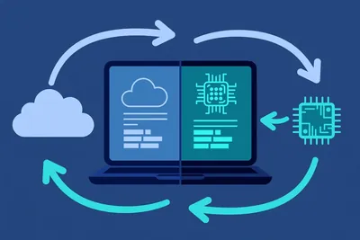
微软在 10 月 7 日的发布会上说，GitHub Copilot 本月底前支持本地模型推理。写代码的时候，系统可以自动决定走云端大模型还是走电脑本地模型，你也可以在 VS Code、Copilot …
微软在 10 月 7 日的发布会上说，GitHub Copilot 本月底前支持本地模型推理。写代码的时候，系统可以自动决定走云端大模型还是走电脑本地模型，你也可以在 VS Code、Copilot CLI 里手动锁死一种。
本地这边，微软推了 MAI Code 1.1 Flash，总参数 1370 亿、实际激活 68 亿，走 Windows ML 就能跑。官方称在 Surface Laptop Ultra 上，2K 到 256K 长度的提示词，解码速度约每秒 **40 至 63** 个词元。开发者也可以挂自己兼容 OpenAI 接口的本地端点。
为什么有用：代码不方便出公司网络的团队，敏感片段可以在本地处理；普通改错、补全这种小活走本地，速度快还省钱；复杂重构再切回云端。缺点也明显：本地效果取决于电脑配置，老机器跑起来可能会卡。
普通人怎么用：如果你用 VS Code 写代码或写脚本，本月底更新后去设置里找 Copilot 的模型选择，先选自动模式跑一周，体感一下本地和云端的差异，再决定要不要常开本地。
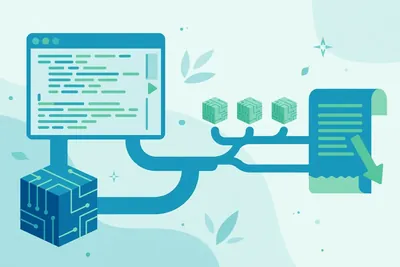
用 Claude Code、Codex 写代码的人有个共同肉疼点：工具好用，账单也涨得快。Together AI 刚放出的免费工具 Together Link，就是冲这个来的。它不动你原来的工具，只在…
用 Claude Code、Codex 写代码的人有个共同肉疼点：工具好用，账单也涨得快。Together AI 刚放出的免费工具 Together Link，就是冲这个来的。它不动你原来的工具，只在启动时把背后的模型换成便宜的开源模型：你照样在 Claude Code 里敲命令，干活的换成了 Kimi K3、GLM 5.3 这类模型，收费按 Together 的价目走，比官方顶级模型低一大截。
装法只有一行命令：`curl -fsSL https://link.together.ai/install | bash`。装完运行 `togetherlink claude` 就能进 Claude Code，界面和操作全不变。它的自动路由会先判断问题难不难：简单的直接派给便宜模型，在 Claude 里选 Opus 档实际跑的是 Kimi K3，选 Fable 档跑 GLM 5.3；你配了 Anthropic 密钥的话，真正的硬骨头才会转回 Claude Opus。每轮对话里敲 `/model` 就能随时切换。工具本身免费，花的只有模型调用费，官方口径是整体能省一半以上。
避坑提醒：它还在 beta 阶段，路由规则和模型名单随时会变；公司机密代码先别往上面送，毕竟请求要过第三方的网关；省钱数字是官方说法，你自己拿一周的真实账单对一下再下结论。
普通人怎么用：个人练手项目、写小脚本、改自己网站这类活儿，先用它跑一周，效果够用就别再为每一行代码付顶级模型的钱。
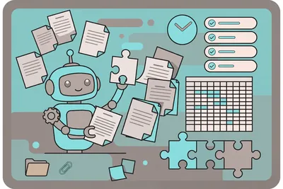
9 月 29 日，DeepSeek 给开源智能体框架 Harness 发布了 v0.2 预览版，最大的变化是：Mac 和 Windows 都有了官方桌面安装包。之前它只能在命令行或网页里跑，现在双击就…
9 月 29 日，DeepSeek 给开源智能体框架 Harness 发布了 v0.2 预览版，最大的变化是：Mac 和 Windows 都有了官方桌面安装包。之前它只能在命令行或网页里跑，现在双击就能用。
Harness 是个"智能体运行环境"——把大模型和文件、代码、工具连起来，让它替你干活。它的设计哲学是"一切皆插件"：模型适配、工具注册、会话记录、沙箱和审批策略、智能体循环，全是可插拔的插件。MIT 协议开源，GitHub 上已经攒下约 24.2 万 star。
v0.2 的新增功能很对普通人胃口：
- 插件管理页：安装、配置、开关插件，不用敲命令；
- 创作者模式：用自然语言对话就能自己做插件；
- 定时任务插件：设好频率，智能体到点自动跑，跑完有历史记录可查；
- 文档干活：扔进去文档、表格或 PDF，让它出图表或幻灯片；
- 文件改动预览：右侧边栏直接看生成了什么、改了哪行代码。
上手：去 deepseek.com/harness 下安装包（Mac 要 Apple Silicon，Windows 64 位），登录 DeepSeek 账号就能用，账号自带联网搜索不用再配 key。嫌装软件麻烦，一行命令 `npx @deepseek-ai/dsh web` 也能起网页版。
避坑三条：第一，这是开发者预览版，官方明说后面会有不兼容的大改，别拿它碰重要文件；第二，跑之前先读仓库里的 SAFETY.md；第三，之前市面上流通过非官方的"Harness Desktop"包装器，认准官网下载，别装错了。
普通人怎么用：从定时任务下手。比如设一个"每天早上 8 点搜一遍我这个行业的新闻，整理成三条摘要发我"，等于雇了个不拿工资的助理。
10 月 1 日起，美国女性可以在 Everlywell 平台上直接买到 Clairity Breast 的 AI 乳腺癌 5 年风险评估，价格 249 美元，自费。
10 月 1 日起，美国女性可以在 Everlywell 平台上直接买到 Clairity Breast 的 AI 乳腺癌 5 年风险评估，价格 249 美元，自费。
这不是看片子找肿瘤。它读的是你做过的乳腺 X 线片（钼靶），用 AI 找肉眼看不见的细微模式，算出未来 5 年得乳腺癌的概率。结果分三档：平均风险（5 年内确诊概率低于 1.7%）、中等风险（1.7%–3%）、高风险（高于 3%）。
它是有"牌照"的：2025 年 5 月拿到美国 FDA 的 De Novo 授权，还被写进了 NCCN 乳腺癌筛查诊疗指南。FDA 审批时用了 5 家美国医疗机构的 7.7 万多张筛查片子验证，获批之后又在 10 家机构的 12 万多张片子上跑过。
用法很直白：有近期钼靶片子的女性，在 Everlywell 网站下单，把片子传上去，拿到一份 5 年风险报告，带着报告去找医生聊下一步——比如要不要缩短筛查间隔、加做 MRI 或基因检测。
避坑，认真说三条：第一，它预测的是风险，不是诊断，**查不出已存在的肿瘤**，低分不等于免检；第二，高分不等于确诊，别自己吓自己，更别因此去做不必要的活检，一切跟医生商量；第三，目前主要在美国提供，国内的读者先看思路——下次体检可以问问体检中心，有没有接 AI 读片做风险评估的服务。
普通人怎么用：40 岁以上、有家族史的女性，把这条存在手机里，下次做乳腺检查时主动问医生一句"我的片子能不能做 AI 风险评估"。信息本身，就是预防的一部分。
用 Claude Code 写代码的人注意：本周更新到 2.1.284 之后，你在 /model 里选的 sonnet，已经悄悄换成了 Claude Sonnet 5.5（模型 ID：claude-s…
用 Claude Code 写代码的人注意：本周更新到 2.1.284 之后，你在 /model 里选的 sonnet，已经悄悄换成了 Claude Sonnet 5.5（模型 ID：claude-sonnet-5-5）。
换的是什么？价格没换：输入还是 **$2**/百万 tokens，输出 **$10**/百万 tokens，缓存读取 **$0.20**，和 Sonnet 5 一模一样。换的是速度和效率：官方说输出速度提升 **30%** 以上，典型任务的单次成本最多降 **30%**。上下文窗口拉到 **1M** tokens，一次能吞下整个仓库。
这对天天写代码的人意味着：同样的钱，跑得更快。修 bug、写文档、做表格幻灯片这类活儿，账单还更低。升级是自动的，你什么都不用改。
顺带提一句，同周的更新里还有两个值得看的东西。2.1.287 加了 Claude Mods，插件能改更深层的行为，官方还自带了一个 "You should know" 副驾驶，会在旁边盯着你的操作、提醒你可能漏掉的事。2.1.285 加了两个新开关：CLAUDE_CODE_DISABLE_WEB_FETCH 可以关掉联网抓取，allowedProviders 能限定 API 走哪家通道，管代码安全的团队会喜欢。
避坑只有一条：价格一样不代表效果一样。厂商的"快 30%"都是在自家测试环境里测的，请你升级后拿自己的常规任务跑一遍，确认没问题再当主力用。
普通人怎么用：靠 AI 写代码、做文档的人，这周更新 Claude Code 就行，默认就是新模型，等于免费提速。
10 月 1 日，微软 AI 一口气发布三个语音模型：实时转录 MAI-Transcribe-2-Streaming，加两个语音合成 MAI-Voice-2.1 和 Flash 版。都在 Micros…
10 月 1 日，微软 AI 一口气发布三个语音模型：实时转录 MAI-Transcribe-2-Streaming，加两个语音合成 MAI-Voice-2.1 和 Flash 版。都在 Microsoft Foundry 上公开预览，目标很明确——让语音 Agent 的对话跟真人一样快。
先说耳朵。转录模型支持 60 种语言，自动识别语种，音频进来 100 多毫秒就吐出第一版文字，还边说边修正。微软称它在 Artificial Analysis 上准确率第一。客服 Agent 不用等你说完就能开始判断意图，这是实时对话的关键。
再说嘴。Voice-2.1 支持 23 种语言，同一个声音说 23 种语言，还带当地口音；几秒钟参考音频就能克隆声音（要走授权和同意审批，防滥用）。Flash 版延迟 150 毫秒，主打抢答。
价格：转录 0.54 美元/音频小时（年底前优惠价）；配音 22 美元/百万字符，Flash 版 15 美元/百万字符。整条链路算下来：你闭嘴后 130 毫秒出最终文本，LLM 推理 300–500 毫秒，配音 150 毫秒，一轮对话 580–780 毫秒，1 秒以内，过了"像真人"的及格线。
适合谁：做客服、电话 Agent 的开发者；做播客、课程、短视频的人——转录做文字稿，配音做多语言版本。
避坑：公开预览版，没有 SLA，别直接上生产扛大流量；转录目前只开了三个区（瑞典中部、美国中部、东南亚）；声音克隆要过审批，不是随到随用。
普通人怎么用：做知识付费、播客的，先去 MAI Playground 免费试转录，把长音频转成文字稿做二次创作；想出海的，用 Voice-2.1 同一个声音配 23 种语言版本，比找配音演员便宜一个数量级。
余温昨晚发了条8.2万观看的帖子：Higgsfield上线了Computer Use，由GPT-6.1 Sol驱动。装个ChatGPT扩展，AI直接操控完整的Higgsfield界面——点按钮、拖时间…
余温昨晚发了条8.2万观看的帖子：Higgsfield上线了Computer Use，由GPT-6.1 Sol驱动。装个ChatGPT扩展，AI直接操控完整的Higgsfield界面——点按钮、拖时间线、调参数，从头到尾自己干，人不用接管。
先说说这事为什么值得你看一眼。以前AI做视频的流程是：人写提示词→AI生成→人不满意→重新抽卡。不管模型多牛，最后一步永远是人坐在屏幕前点点点。Fotor Agent解决的是"一次做对"（直接出可编辑的多轨成片，不用反复抽卡），Higgsfield这次解决的是"不用动手"——AI从聊天框里的军师，变成了坐在电脑前的员工。
这就是Computer Use这波概念的实质：AI不再只回你话，它开始替你操作软件。Anthropic两年前就演示过，OpenAI的Operator也做过，但一直没大规模落地——原因很现实：AI点错一个按钮，整条流水线就崩了。
泼盆冷水。余温这条帖子标注了"付费合作"，演示效果看看就好，别当成实测。另外Computer Use的翻车率目前普遍不低，卡死、点错、死循环都是常见病。
普通人怎么用：做短视频的，去Higgsfield官网看Computer Use的完整演示，重点观察"它处理多步骤任务时中途掉不掉链子"。先拿免费额度跑通一条完整流程，确认稳定再谈替代人工。别为概念付费，为稳定的结果付费。
想让Claude Code用Kimi、Codex用DeepSeek，光改配置不够——各家接口格式对不上，还得另外找中转服务，又贵又不稳定。今天GitHubDaily和周览资源同一天推荐了一个开源项目M…
想让Claude Code用Kimi、Codex用DeepSeek，光改配置不够——各家接口格式对不上，还得另外找中转服务，又贵又不稳定。今天GitHubDaily和周览资源同一天推荐了一个开源项目Magpie，专门治这个病。
原理很简单：在你本机起一个中转服务，把各家模型的接口统一翻译成OpenAI/Anthropic兼容格式。配一次，之后Claude Code、Codex、Gemini CLI、Cursor、OpenCode想换哪个模型就换哪个，不用再求中转。
为什么值得看？AI Coding现在最大的成本不是学习成本，是token账单。Kimi、DeepSeek的API价格只有Claude的十分之一甚至更低。能无缝切换模型=同样的活，花十分之一的钱。这个账，做AI编程的人都算得明白。
实操也不复杂：GitHub搜yetone/magpie，拉下来在本机跑起来，把客户端配置指向本地地址就行。Windows、Mac都能跑。
避坑两条：第一，中转层多了一跳，出问题先查Magpie自己的日志，别冤枉模型。第二，便宜模型写代码确实弱一档，日常小改随便用，复杂重构还是切回Claude这类强模型——为省那点token钱返工两次，更亏。
普通人怎么用：正在用Claude Code或Codex写代码的，今天就把Magpie装上，先拿DeepSeek或Kimi跑一周的日常小改。月底看账单，省下来的钱会诚实地告诉你这事值不值。
李韭二昨天演示了Meta Muse直出视频，对打seedance 2.5，评论区直接开起了邀请码互助帖——Meta的AI个人助手Muse，在中文AI圈刷屏了。
李韭二昨天演示了Meta Muse直出视频，对打seedance 2.5，评论区直接开起了邀请码互助帖——Meta的AI个人助手Muse，在中文AI圈刷屏了。
Muse是什么？Meta的个人AI助手，能文能视频（muse video），方向很明确：从"你问它答"变成"你说一声，它把事办了"。OpenAI前脚刚发布Dots（7×24小时在线的智能体，200美元/月），Meta后脚Muse走红，Personal Agent大战正式开打。
歸藏还做了件实在事：横评了主流Personal Agent的虚拟机配置。Grokbot从CPU、内存到硬盘都给得很足，Dot限制比较多——不能SSH，玩法少了不少。虚拟机配置决定了你的AI助手是"真员工"还是"玩具"，这份横评值得存。
泼盆冷水。OpenAI Dots 200美元/月的定价已经被Kin实测吐槽"回复慢、智商低"；Muse这边邀请码互助开张，说明还在早期——早期红利和早期坑，向来是双胞胎。
普通人怎么用：想尝鲜的去找邀请码（蓝哥AI开了互助帖），先白嫖体验一把"AI替你办事"到底是真办事还是高级玩具。记住一条：别急着付费订阅任何一家Personal Agent，等三个月，看谁还活着、谁真好用，再掏钱。
9 月 14 日，豆包手机助手消费者版发布。跟去年底那个"演示很炫"的技术预览版不同，这次强调的是"每天真能用"。首款搭载的努比亚 NaviX Ultra 9 月 16 日开售——第一款把 AI 智能…
9 月 14 日，豆包手机助手消费者版发布。跟去年底那个"演示很炫"的技术预览版不同，这次强调的是"每天真能用"。首款搭载的努比亚 NaviX Ultra 9 月 16 日开售——第一款把 AI 智能体做到系统层的国产手机。
它解决哪三件事？官方演示很实在。
找功能——屏幕问答。对着屋子打开相机说"按这个装修风格，帮我找个 1 米 2 以内、1000 块以下的柜子"，它看懂画面，直接去电商平台找符合的。不用截图、不用切应用。
记信息——本地记忆。相册、短信、便签都能搜。问"港澳通行证啥时候到期"，它从你手机里翻出答案；录音接了飞书妙记，能追问"昨天访谈里提到的产品建议"。看到好内容三指上滑，存成随时可搜的"屏幕记忆"。
走流程——真办事。说"帮我叫辆去公司的车"，它确认地址、选车型、直接下单。去年预览版里那个"操作手机"功能，这次以 Beta 开放，还配套了 SAEP 协议：第三方应用可以自己声明"允不允许 AI 在我这儿自动化操作"，不同意的不碰。
隐私这块给了三层：数据收集遵循"合理必要、用户自主"，Agent 操作分层分级管，AI 键带指纹鉴权——按一下先验明正身。白皮书挂官网了，介意的可以去翻。
普通人怎么用：不急着换机。先把豆包 App 当个人助理用起来——语音备忘、三指上滑存灵感、让它帮你查手机里的旧信息。等你发现"找东西"这件事真离不开它了，再考虑换那台 AI 手机。工具的价值，永远是先用起来再说。